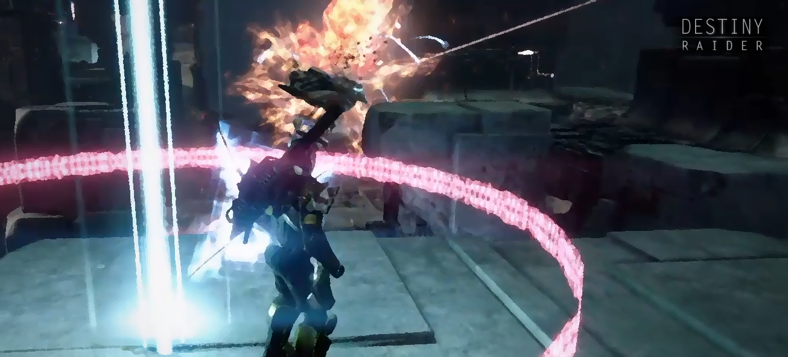
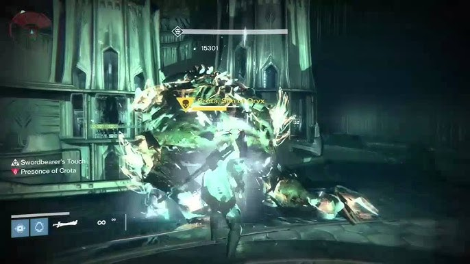
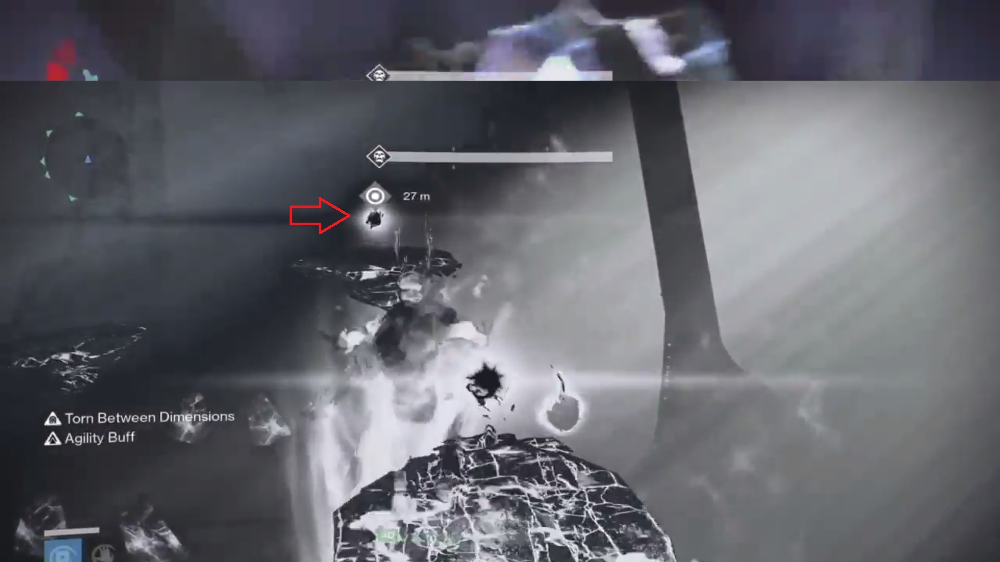
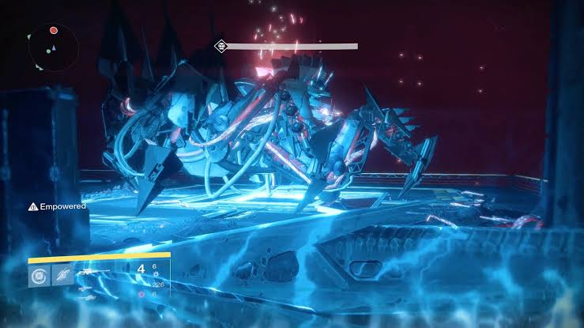

Hero moments are not accidents — they are a designable retention loop. Destiny proved it. Four raids, one recurring architecture, and a mechanic — the super — that makes the case on its own. This is the framework for replicating it.
Someone powerful. Someone who takes charge when it matters. Games have always sold that promise — most of them just leave it to chance.
Games have always sold the power fantasy — the promise that inside this world you are capable of something extraordinary. But most multiplayer games leave that promise to chance. The hero moment might happen. It might not. The design doesn't engineer it, it just hopes the conditions emerge.
Destiny didn't hope. Bungie built the conditions directly into the raid architecture — repeatedly, deliberately, across four different encounters — until the hero moment stopped being a lucky accident and became a mechanic you could count on showing up.
Hero moments are not accidents — they are a designable retention loop. Destiny proved it. This is the framework for replicating it.
Strip a hero moment down to its mechanical parts and three conditions hold every time. Miss one and it isn't a hero moment — it's just a mechanic.
These three conditions are the test. Any mechanic that passes all three produces a hero moment. Any mechanic that fails even one collapses into something else — a random event, a trivial task, or a cool ability nobody remembers using. Destiny 1's raids are the clearest proof that exists, because Bungie ran this test four separate times and passed it four separate times.
Destiny 1 raids were designed to have one player perform the main hero moment mechanic at any given phase. These aren't just roles — they're rotating spotlights.
Vault of Glass established a relic wielder. Crota's End focused on the sword bearer. King's Fall built around the immortality runner. Wrath of the Machine empowered three players to slam the boss and extend the damage phase. Bungie engineered a system where every raid concentrates responsibility into one player or group at the moment that determines whether the encounter succeeds or fails.
Six Guardians. One relic. One shield to break.

Six Guardians drop into the Templar's Well. The boss spawns fully shielded — no one can touch it. One player picks up the Relic. From that moment the entire encounter is on them.
The relic wielder has one job no one else can do. They are the only mechanic that can break the Templar's shield. Without them opening that damage window, the team cannot progress. On top of that, they're responsible for shielding teammates from the Templar's constant bombardment — failing to do so is most likely death for the fireteam. Should the relic wielder be inexperienced, they can completely throw off the encounter.
There's a second layer most players never learn: mid-damage-phase, the Templar tries to teleport away into the Oracle realm to reset the fight. A relic wielder who reads the tell and throws up the Aegis's shield at the right instant can block that teleport outright — trapping the Templar in the open and extending the damage window well past what an untrained wielder gets. It's the same shape as the sword combos in Crota's End: a mechanic everyone can use at a basic level, with a ceiling almost nobody reaches.
Five players are pouring everything they have into the boss. One player is carrying the outcome.
Five players drain the shield. One player closes the distance.

Five players can drain Crota's shield and bring him to his knees — but they cannot actually damage him. That falls entirely on the sword bearer. When Crota kneels, the sword bearer calls the signal and closes the distance. They are the sole damage dealer in the encounter. The entire fireteam's effort — the shield drain, the positioning, the communication — exists only to create the window the sword bearer steps into.
What most players miss is the depth of skill expression the sword mechanic carries. The sword has combos the majority of players never discover, and when executed alongside the sword super, the damage ceiling rises significantly above what a basic bearer delivers. A sword bearer who has mastered the mechanic doesn't just clear the encounter — they accelerate it.
A bad sword bearer tells the opposite story. Poor timing risks death at Crota's hand. Extended runs stretch further than they need to. At worst, a mistimed approach causes a full wipe. The gap between an inexperienced bearer and a practiced one is the gap between a clean run and a failed one.
Four players hold the door open. One player runs.

Four players step on plates simultaneously to open the path. One player runs. The immortality runner platforms across the arena to reach the Chalice — the only source of the bubble that keeps the fireteam alive during Oryx's onslaught. Without the bubble, the team has no answer to his wipe mechanic. The runner isn't supporting the encounter. They're the reason the team survives it.
Like the relic wielder and the sword bearer, the runner is a chosen role. The responsibility concentrates into one player at the moment that determines whether the fireteam lives or dies. Should the runner fail to reach the Chalice, or fail to coordinate the team into the immortality bubble in time, both outcomes end the same way — a wipe.
Bungie's greatest example of raid collaboration — and it still found a hero moment inside it.

Aksis Phase 2 gives the fireteam five pillars and five chances to survive his wipe mechanic. Miss all five and the encounter is over. Each damage window is short — Aksis teleports back to his pedestal and begins charging the attack that ends the run. This is where the empowerment mechanic takes over.
Three players turn blue — lit up like a jolly rancher — and are handed the most consequential role in the encounter. As Aksis teleports around the arena after each slam, these three players must coordinate instantly, assigning locations between themselves to cover all positions. The logic is simple. The execution is not. Think four corners — every base must be covered or Aksis wakes up, the damage phase ends prematurely, and the team loses a pillar. Lose enough pillars without finishing the fight and the wipe is inevitable.
The empowered players aren't just extending the damage phase. They're the reason the damage phase exists at all in its fullest form.
You've read through four very different raid mechanics — but have you caught what they all encapsulate? Every single one places a player in full control of the encounter's outcome. Should they fail, the consequences are near game ending. And yet in that same moment of pressure and responsibility, they are the most powerful person in the room. That is not a coincidence. That is Bungie engineering the hero moment — power and consequence delivered simultaneously through deliberate mechanical design. That is the framework. And it is replicable.
Destiny's supers are not balanced. They are not meant to be — and that's the entire point.
They are deliberately overpowered — designed to clear rooms of adds in seconds, supercharged further with the right build, and terrifying in PvP to the point where enemies run at the sight of one activating. That is not a design oversight. That is the entire point.
The super is Destiny's purest expression of the hero moment framework. The moment it activates, you become the center of attention. In PvE you take the lead — adds fall, the encounter shifts, your fireteam follows your momentum. In PvP the dynamic flips entirely — the enemy team scatters or gets erased. Either way, every other player in the encounter is reacting to you.
What a studio actually does to engineer hero moments deliberately — instead of hoping they emerge.
Studios looking to build games with RPG and MMO elements should understand one thing before anything else — balance is an umbrella, and if you hold it wrong it blocks out the power fantasy entirely.
The instinct to balance everything equally is understandable. But it produces games where no moment feels extraordinary, because every moment is designed to feel fair. Hero moments are not fair. They are deliberately weighted toward the player. That is the point.
Destiny is the proof. Despite its core identity living in PvE, and despite its supers being blatantly overpowered by design, the power fantasy did not collapse into chaos in PvP. Bungie balanced around the power fantasy rather than against it. The result was a game where players genuinely felt in control of their own fate. That is not an accident. That is a design philosophy. And it is the reason Destiny carries the slogan it does — Guardians make their own fate.
So what does a studio actually do to engineer hero moments deliberately?
Ask any Destiny veteran about their most memorable raid moment and they won't describe a loot drop or a seasonal event. They'll describe the run where they were the sword bearer. The night they solo'd the scorch cannons on Aksis. The moment they broke the Templar's shield with half the team down and somehow held it together.
The residue a well-designed hero moment leaves behind — and why it's the reason players come back.
Players become nostalgic about moments where they felt like they clutched. Where their intervention changed the outcome. Where, for one concentrated moment, they were the reason the team survived.
That nostalgia is not accidental. It is the residue of a hero moment designed well enough to leave a mark.
Studios that understand this build games players return to. Not because the content is endless or the battle pass refreshes every three months — but because somewhere in the game there is a moment waiting for the player to become the protagonist of. A moment they will be talking about years later.
Hero moments are not accidents. They are not luck. They are a system. And now you have the framework to build them.